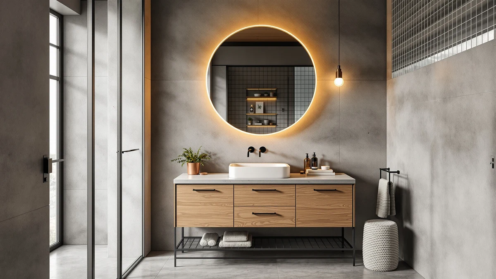

Quick Answer
For the best vanity tops under $1000, the LUCKWIND 72" Bathroom Vanity Sink ($849.99) leads our lineup with a dual-sink top and a roomy engineered-wood cabinet. If you want to spend less, the eclife 36" Floating Vanity ($249.99) covers small bathrooms, and the Design House Concord 72" ($497.78) is the budget cabinet to pair with your own counter.
Our pick: LUCKWIND 72" Bathroom Vanity Sink, $849.99 Check Price on Amazon
Things to Know Before You Buy
- Most picks include the top and sink. Six of our seven vanities arrive as a combined cabinet, counter, and basin, so the listed price is what you pay to get a finished surface on the wall.
- Engineered wood is the norm here. Every cabinet except the diatomaceous-earth XWNE uses MDF and engineered wood. That keeps the best vanity tops under $1000 affordable, but you trade away the moisture resistance of solid wood or stone.
- Width drives the price. A 36-inch single-sink unit starts near $250, while 72-inch double-sink models run from $620 to $850 inside our budget.
- Two premium options sit above the line. The XWNE and ARIEL vanities cost more than $1000, so we included them only as a reference for buyers who can stretch.
- Check your plumbing rough-in. A double-sink top needs two drain and supply locations, so confirm your wall before you order a 72-inch model.
Shopping for the best vanity tops under $1000 means weighing three things at once: the counter surface, the cabinet under it, and the sink that ties them together. Buy the wrong width and your door catches the drawers. Buy a thin top and it chips at the basin cutout within a year. We pulled together seven popular vanities, five of them comfortably under the $1000 line, and sorted them by how the top, the storage, and the price line up.
Our top pick is the LUCKWIND 72-inch dual-sink vanity at $849.99. It gives two people their own basin, wraps the whole thing in an engineered-wood cabinet, and still leaves room under the grand. If your bathroom is small or your budget is tighter, the $249.99 eclife floating vanity and the $497.78 Design House Concord cabinet handle those cases without forcing a compromise on the parts that matter.
Every price and rating below comes from the current Amazon listing for each unit, and all seven hold a 4-star customer rating. We flag where a cabinet uses MDF instead of solid wood, where a top ships separately, and where a model climbs past our budget so you can decide with the same information we used.
Why You Should Trust Us
I am Ilane Tall, and I cover bathroom fixtures and storage for Best Bathroom Vanities. To rank the best vanity tops under $1000, I started from the same place a homeowner does: the Amazon listing, the dimensions, the material spec, and the customer rating. I read the question-and-answer threads and the critical reviews, not just the five-star ones, because a chipped corner or a warped drawer shows up there first.
I do not run a paid lab or invent a panel of testers. What I do is compare these seven vanities against each other on the things that change your day: how wide the top is, whether the sink comes with it, how the cabinet is built, and what you pay. When a unit costs more than $1000 or ships without a counter, I say so plainly so the price you see matches the surface you end up with.
We started with a price ceiling. To qualify as one of the best vanity tops under $1000, a vanity had to deliver a usable counter surface for less than a grand, ideally with the sink included so you are not buying two halves of the same purchase. That rule put the LUCKWIND, eclife, LUXOAK, Design House, and SOFTSEA units front and center.
From there we looked at width and sink count, since a top is only as useful as the space it gives you. We kept a 36-inch single-sink option for small rooms, a 61-inch farmhouse double, and several 72-inch doubles so two people can share. We also held two higher-priced models, the XWNE and the ARIEL, as reference points for anyone whose budget can stretch past the line.
Finally we weighed material and build. Most of these cabinets use MDF and engineered wood, so we favored the ones whose tops and storage justify the price rather than the ones that look the part in a photo.
We evaluated each vanity top under $1000 on four checks that map to how the unit lives in a real bathroom. First, the surface: we looked at the counter material, the basin cutout, and whether the top arrives attached or separate. A combined top means one delivery and one install; a separate cabinet like the Design House Concord means a second decision and a second cost.
Second, storage and fit. We compared drawer counts and widths, because an eight-drawer SOFTSEA stores far more than a floating 36-inch eclife, and the right answer depends on your wall. Third, build quality, where we read owner reviews for the failure points that matter on engineered wood: swelling at the sink, drawer slides that sag, and finish that peels near water.
Fourth, value. We set the listed price against the width, the sink count, and the included top so the ranking reflects what you get for the money rather than the lowest number. The result is a lineup where the best vanity tops under $1000 earn their spot on substance.
Our Picks

LUCKWIND 72" Bathroom Vanity Sink
What we like
- Two sinks in one 72-inch top
- Largest cabinet in our budget lineup
- Stays under $1000 with the top included
- 4-star owner rating
Flaws but not dealbreakers
- Engineered wood, not solid hardwood
- 72 inches needs a wide, open wall
- Two-sink plumbing means two rough-ins
| Material | MDF / engineered wood |
| Size | 72"-Dual Sink |
The LUCKWIND 72-inch is the vanity top under $1000 we would put in most shared bathrooms. At $849.99 it gives you a full 72-inch surface with two basins, so two people can brush and shave without elbowing each other, and it still leaves a hundred and fifty dollars of headroom under the budget. The cabinet is the largest in this group, which matters when the counter is the part everyone touches every morning.
The top and sinks arrive as one combined unit, so install is a single job rather than a counter-shopping side quest. The build is MDF and engineered wood, which keeps the price reasonable but asks you to wipe up standing water around the basins so the surface does not swell over time. Owners give it a 4-star rating, and the trade-offs here are the honest ones for the category: you get width and two sinks for the money, not the moisture resistance of stone or solid wood. For a couple who wants real two-sink space without crossing the grand, this is the pick.

eclife 36" Floating Bathroom Vanity
What we like
- Lowest price in the lineup at $249.99
- Floating design opens up the floor
- 36-inch width fits tight walls
- Sink top included
Flaws but not dealbreakers
- Single sink and limited counter space
- Wall mount needs solid blocking or studs
- MDF build wants careful sealing near water
| Material | MDF / engineered wood |
| Size | 36 Inch |
The eclife 36-inch floating vanity is the runner-up because it solves a different problem than the LUCKWIND: small space and a small budget. At $249.99 it is the cheapest vanity top under $1000 in this group by a wide margin, and the 36-inch width tucks into a powder room or a narrow wall where a 72-inch double would never fit. The sink top comes with it, so you are not adding a counter purchase on top of the cabinet.
The floating mount is the appeal and the catch. Hanging the cabinet off the wall makes a small bathroom feel larger because the floor runs underneath, and it makes the floor easier to mop. That same mount means you need solid studs or added blocking to carry the weight, so the install is a notch more involved than a floor-standing unit. The cabinet is MDF and engineered wood, the storage is modest, and the single basin limits how many people can share it. For a guest bath, a starter apartment, or a second bathroom, the eclife gives you a finished top and sink for the price of a counter alone elsewhere. It holds a 4-star rating from owners.

LUXOAK 61" Farmhouse Bathroom Double
What we like
- Double sink for $479.99
- 61-inch width fits where 72 inches will not
- Farmhouse styling with the top included
- 4-star owner rating
Flaws but not dealbreakers
- Engineered-wood construction
- 61 inches is an odd width to plan around
- Two basins on a shorter top means less open counter
| Material | MDF / engineered wood |
| Size | 61" |
The LUXOAK 61-inch is the pick when you want a double-sink vanity top under $1000 but your wall cannot take a full 72 inches. At $479.99 it lands two basins and a farmhouse, shaker-style cabinet for less than half the price of our top LUCKWIND, which makes it the value play for the look. The 61-inch width is the headline: it fits a stretch of wall that is too short for a 72 yet too wide to waste on a single sink.
The styling does a lot of work here. A shaker door front reads as more expensive than the engineered-wood cabinet behind it costs, and the sink top ships with the unit so the price is the finished price. The catch is the same one that runs through this category. The cabinet is MDF and engineered wood, so it wants the usual care around standing water, and fitting two basins onto a 61-inch top leaves less open counter than a 72-inch model. Owners rate it 4 stars. For a mid-size bathroom that wants the farmhouse look and a second sink without crossing five hundred dollars, the LUXOAK is the one to beat.

Design House Concord 72 Inch
What we like
- Full 72-inch cabinet for $497.78
- Lets you pick your own top and sink
- Long-running model with a 4-star rating
- Leaves plenty of room under the budget
Flaws but not dealbreakers
- Top and sink are sold separately
- Total cost climbs once you add a counter
- Engineered-wood cabinet
| Material | MDF / engineered wood |
| Size | 72 in. |
The Design House Concord is our budget pick, and it is the one unit here that asks you to bring your own vanity top. At $497.78 you get a 72-inch cabinet, not a finished surface, which sounds like a downside until you remember that picking your own counter is exactly what some remodels need. If you already have a stone or laminate top, or you want to match an existing one, paying for the cabinet alone keeps you well under $1000 and out of a top you did not choose.
This is a long-running model, and the 4-star rating reflects buyers who knew what they were getting: a sturdy, plain 72-inch base at a low price. The math is the thing to watch. Once you add a counter and a sink, your total can approach or pass what the all-in LUCKWIND costs, so the Concord wins only when you have a top in hand or a specific surface in mind. The cabinet is engineered wood like the rest of this group. For a from-scratch build with the rest of the parts decided, it is the budget vanity base that gives you the most control for the money.

SOFTSEA 72 Inch Double Sink
What we like
- Eight drawers, the most storage here
- 72-inch double-sink top included
- Stays under $1000 at $619.99
- 4-star owner rating
Flaws but not dealbreakers
- Drawer slides on engineered wood need care over time
- 72 inches demands a wide wall
- More expensive than the 61-inch LUXOAK
| Material | MDF / engineered wood |
| Size | 72" (8 Drawers) |
The SOFTSEA 72-inch is the storage answer in our vanity tops under $1000 lineup. Eight drawers is more than any other unit here gives you, and in a family bathroom that is the difference between a cluttered counter and a clear one. At $619.99 it pairs that drawer bank with a 72-inch double-sink top, so two people get their own basin and a place to put their things. If your morning involves more than a toothbrush, this is the cabinet that absorbs it.
The drawers are the reason to buy it and the part to watch. On an engineered-wood cabinet, drawer slides carry weight every day, so loading them sensibly keeps them running smoothly for years. The 72-inch width needs an open wall, and at $619.99 it costs more than the 61-inch LUXOAK, which is the trade for the extra storage and width. Owners give it a 4-star rating. For a shared bathroom where storage is the constraint rather than budget or footprint, the SOFTSEA earns its place over the cheaper doubles.

XWNE 72-inch Dark Walnut Bathroom
What we like
- Deep dark-walnut finish
- Full 72-inch footprint
- 4-star owner rating
Flaws but not dealbreakers
- At $1,614.99 it sits above our $1000 budget
- Costs nearly double our top pick
- Premium price for a similar engineered build
| Material | Diatomaceous earth |
| Size | 72 inch |
The XWNE 72-inch is the first of two units that climb past our budget, and we include it as a reference rather than a value pick. At $1,614.99 it costs nearly double the LUCKWIND, and the draw is the dark-walnut finish, which photographs as a designer piece and gives a bathroom a deeper, warmer tone than the lighter cabinets in this group. If a vanity top under $1000 is the goal, this is not it, and we want to be clear about that.
What you pay for here is the look. The 72-inch footprint matches the doubles we recommend, and owners rate it 4 stars, but the price premium does not buy a better bathroom than our top pick delivers for $849.99. Spend the extra six hundred dollars only if the dark-walnut finish is the specific thing you want and your budget has room for it. For most buyers chasing the best vanity tops under $1000, the LUCKWIND or SOFTSEA gets you a double-sink top for far less.

ARIEL Hepburn 72-inch Bathroom Vanity
What we like
- Named-brand ARIEL Hepburn styling
- 72-inch double-sink design
- 4-star owner rating
Flaws but not dealbreakers
- At $1,689.00 it is the priciest unit here
- Roughly twice the cost of our top pick
- Still an engineered-wood cabinet
| Material | MDF / engineered wood |
| Size | 72'' double sink |
The ARIEL Hepburn 72-inch is the most expensive vanity in this comparison at $1,689.00, and like the XWNE it sits above our under-$1000 line. We list it for buyers who put brand and styling first and have no budget cap. ARIEL is a recognized name in bathroom vanities, and the Hepburn 72-inch double-sink design carries the polished, traditional look that a high-end remodel sometimes calls for.
The honest read is the same as with the XWNE. At nearly twice the price of the LUCKWIND, the ARIEL gives you a 72-inch double-sink top and a 4-star rating, but the cabinet is still MDF and engineered wood underneath the finish. You are paying for the name and the styling, not a leap in materials. If your project budget supports it and the Hepburn look is what you want, it delivers. For everyone shopping the best vanity tops under $1000, treat this as the aspirational bookend and put your money into one of the five picks below the line.
Quick Comparison
| Product | Material | Price | Rating | Best for | Get it |
|---|---|---|---|---|---|
| LUCKWIND 72" Bathroom Vanity Sink | MDF / engineered wood | $849.99 | 4 | Shared bathrooms wanting two sinks under $1000 | View on Amazon → |
| eclife 36" Floating Bathroom Vanity | MDF / engineered wood | $249.99 | 4 | Small bathrooms and the tightest budget | View on Amazon → |
| LUXOAK 61" Farmhouse Bathroom Double | MDF / engineered wood | $479.99 | 4 | Farmhouse look with two sinks under $500 | View on Amazon → |
| Design House Concord 72 Inch | MDF / engineered wood | $497.78 | 4 | Pairing with your own counter and sink | View on Amazon → |
| SOFTSEA 72 Inch Double Sink | MDF / engineered wood | $619.99 | 4 | Families needing the most drawer storage | View on Amazon → |
| XWNE 72-inch Dark Walnut Bathroom | Diatomaceous earth | $1,614.99 | 4 | Premium dark-walnut look above the budget | View on Amazon → |
| ARIEL Hepburn 72-inch Bathroom Vanity | MDF / engineered wood | $1,689.00 | 4 | High-end remodels with no budget cap | View on Amazon → |
The Competition
Two vanities in our group did not make the list of best vanity tops under $1000 for the same reason: price. The XWNE 72-inch Dark Walnut at $1,614.99 and the ARIEL Hepburn 72-inch at $1,689.00 both clear the budget by a wide margin. They look the part, and each holds a 4-star rating, but neither gives you a meaningfully better build than the $849.99 LUCKWIND. You are paying for finish and brand, not materials, so we kept them as reference points rather than recommendations.
Among the picks that did stay under $1000, the choice comes down to fit. The Design House Concord is the cheapest path to a 72-inch cabinet at $497.78, but it leaves out the top, so its real cost depends on the counter you add. The eclife 36-inch is the value leader at $249.99, yet its single sink and small footprint rule it out for shared bathrooms. Each of these trade-offs is the deciding factor for a specific buyer, which is why they sit in the lineup instead of being cut.
Frequently Asked Questions
Can you get a good vanity top under $1000?
Yes. Five of the seven vanities we compared cost less than $1000 with a sink top included, ranging from the $249.99 eclife 36-inch floating unit to the $849.99 LUCKWIND 72-inch dual-sink model. At this price the cabinets use MDF and engineered wood rather than solid hardwood, but they hold a 4-star rating and arrive ready to install.
Do these vanities include the sink and top?
Most of them do. The LUCKWIND, eclife, LUXOAK, SOFTSEA, XWNE, and ARIEL units all ship with a sink top as a combined unit, so you pay one price for the cabinet, the counter, and the basin. The Design House Concord is the exception: it sells as a cabinet only at $497.78, which lets you pair it with a counter you choose.
What size vanity top should I buy?
Match the width to your wall and your sink count. A 36-inch unit like the eclife suits a powder room or a tight wall, while the 61-inch LUXOAK and the 72-inch LUCKWIND, SOFTSEA, and ARIEL double-sink vanities give two people their own basin. Measure the wall, the door swing, and the plumbing rough-in before you commit to a width.
Which vanity top under $1000 should I buy?
For the best vanity tops under $1000, the LUCKWIND 72-inch dual-sink vanity at $849.99 is our overall pick because it pairs a two-sink top with the largest cabinet in the group. Buy the eclife if your bathroom is small, the SOFTSEA if you need the most drawers, and the Design House Concord if you want to bring your own counter.